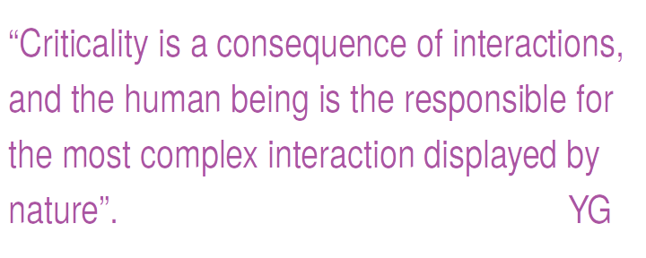

Yérali Gandica
ygandica@gmail.com
Associate Professor
Valencian International University (Spain)
ORCID ID:
https://orcid.org/0000 - 0002 - 6262- 1801
twitter.com/ygandica
My scientific focus revolves around exploring the theoretical foundations of socio-economic phenomena using the framework of Complex Systems and Critical Phenomena. My primary interest lies in identifying the key variables that underlie the universal patterns in the various aspects of human interactions. I've pursued this line of research since my doctoral studies, consistently advancing it alongside my teaching responsibilities. My academic background in Statistical Mechanics and Critical Phenomena during my formal education paved the way for my initial research endeavors, which were centered on agent-based models. Drawing parallels with social systems greatly aided my comprehension of emergent phenomena, which arise from well-defined local rules governing the interactions among individuals. After several significant contributions in this area, I transitioned into the realm of Data Science. This transition allowed me to uncover patterns related to human behavior hidden within vast datasets. During my most recent postdoctoral position, I also delved into high-dimensional data analysis. Building on this preliminary work, I am now establishing my own research agenda, which is dedicated to the analysis of criticality within socio-economic systems.

Short BIO
Yérali Gandica is currently an Associate Professor at the Valencian International University in Spain. Yérali holds a degree in Physics from Universidad Simón Bolívar (Caracas, Venezuela) and a PhD in Physics from the Venezuelan Institute for Research (IVIC). Subsequently, she spent 7 years in postdoctoral positions in Europe. First, at the Center for Computational Physics at the Universidade de Coimbra, Portugal, where she initiated studies on Agent-based models and Big Data. Secondly, she secured a postdoctoral fellowship at the Namur Center for Complex Systems (naXys) within the Mathematics Department of the University of Namur, where she worked on Agent-based models (ABM) and ventured into Network Science. Following that, she joined the Center for Research in Finance and Management (CeReFiM) at the Business Department of the Faculty of Economics, Social Sciences, and Business Administration at the Université de Namur. During this postdoctoral fellowship, Yérali began applying the concepts of Network Science to financial data. Finally, she worked as an Associate Scientific Researcher at the Center for Operations Research and Econometrics (CORE) and the Institute of Information and Communication Technologies, Electronics, and Applied Mathematics (ICTEAM) at Université catholique de Louvain, focusing on Geo-localized Data. In addition to her PhD, Yérali complemented her academic background with a Licenciatura in Sociology. In summary, Yérali has extensive experience working on critical phenomena, computational social science, Big Data, and network science across various interdisciplinary groups, including mathematics, finance, geography, engineering, and medicine. Her previous position was as an Assistant Professor at the International Bachelor in Data Science, affiliated with the Laboratoire de Physique Théorique et Modélisation (LPTM) at CY Cergy Paris Université, Paris, France. At the same university, she obtained her habilitation to supervise PhD theses (HDR) in 2021. To date, she has mentored four master's theses (two in co-supervision) and is currently co-supervising a PhD student.